Cathodic protection
Cathodic protection is an electrical means of corrosion control where the structure to be protected is made into a cathode in an electrochemical cell. Oxidation in the electrochemical cell is concentrated on the anodes leaving the structure protected as a cathode with a net reduction reaction. Properly designed cathodic protection systems can reduce the corrosion rate to negligible amounts.As it will be described in detail below, there are two kinds of cathodic protection: sacrificial-anode cathodic protection and impressed-current cathodic protection. The sacrificial version operates as a galvanic cell, the structure to be protected is connected to a metal anode of higher electrochemical activity which will dissolve to protect the structure (the cathode of the cell). The impressed-current version operates like an electrolytic cell, where an external power source is used to cathodically polarize the structure to be protected.
The most common structures to be cathodically protected are pipelines. The principles of cathodic protection are the same for all structures, so lessons learned on pipelines have been applied to many other structures. Cathodic protection is usually applied to carbon-steel and cast-iron structures, but is has also been used successfully on a variety of other metals. NACE SP0169 contains guidance on these other metals as well as on steel structures.
| 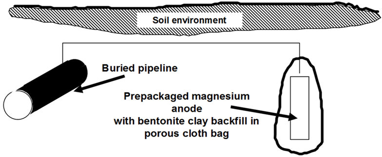 |
| Fig. 1. Single packaged anode buried in soil to protect a buried pipeline. |
{kind=link}
Figure 1 shows a simple sacrificial cathodic protection system for a buried pipeline. The pipeline is connected by a lead wire to a buried magnesium anode which corrodes at an accelerated rate thereby providing protective cathodic current to the pipeline. The picture emphasizes the following ideas associated with cathodic protection:
 •
•  cathodic protection is an electrical means of corrosion control,
cathodic protection is an electrical means of corrosion control,
 •
•  the protected structure becomes the cathode in an electrochemical cell.
the protected structure becomes the cathode in an electrochemical cell.
The picture does not emphasize the following ideas that are also true for most, but not all, cathodic protection systems:
 •
•  protective coatings are the primary means of corrosion control in this pipeline,
protective coatings are the primary means of corrosion control in this pipeline,
 •
•  cathodic protection, acting as a secondary means of corrosion control, is sized to provide the necessary protective current where coating holidays
(defects) do not provide corrosion protection.
cathodic protection, acting as a secondary means of corrosion control, is sized to provide the necessary protective current where coating holidays
(defects) do not provide corrosion protection.
Industry has found over the years that a combination of protective coatings and supplemental (secondary) cathodic protection is the most economical means of corrosion control for buried pipelines and for many similar structures. The protective coating (which is an electrical insulator) is never 100% reliable and needs to be supplemented. The presence of the coating reduces the electrical current demand and saves electricity, which means the cathodic protection system can be smaller than if no protective coating were used.
Some structures have cathodic protection with no protective coatings. Examples include the submerged portions of conventional offshore oil- or gas-production platforms and many kinds of process equipment.
 How cathodic protection works
How cathodic protection works
Cathodic protection was first suggested in 1824 by Humphry Davy (a famous English scientist) for use on British naval vessels. R. Kuhn and coworkers (1933) in coastal Louisiana are generally credited with introducing cathodic protection to the corrosion control of buried structures. The idea remained controversial for decades, but Kuhn and others emphasized that reduced leak records justified its use.
The Evans diagrams in Figures 2 and 3 illustrate the principles of cathodic protection. The intersection of the oxidation and the reduction reactions determines the unprotected corrosion rate. Once cathodic protection is applied, the corrosion current is greatly reduced. In Figure 3 the corrosion rate is reduced over two orders of magnitude (to less than 1/100th of the unprotected corrosion rate). Note that the potential of the cathodically-protected iron in this figure (-0.85 V against saturated copper/copper sulfate reference electrode) is above the equilibrium potential and that the corrosion rate, while reduced by more than two orders of magnitude, is not zero.
| 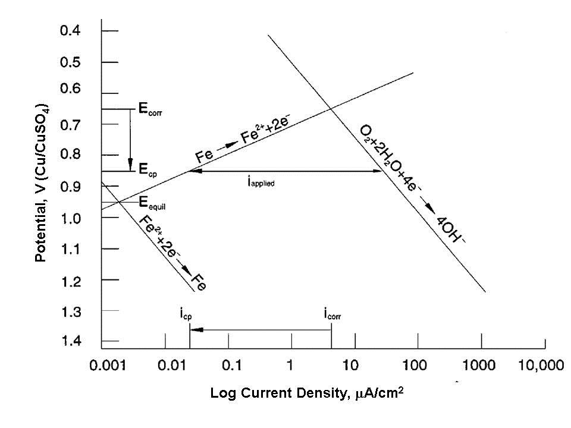 | 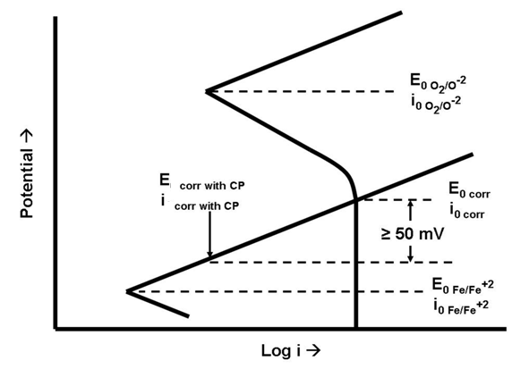 |
| Fig. 2. Evans diagram showing reduction in corrosion rate due to the application of cathodic protection. | Fig. 3. Evans diagram showing reduction in corrosion rate due to the application of cathodic protection if the unprotected corrosion rate is due to concentration polarization of the oxygen reduction reaction. |
{kind=link}
{kind=link}
Both figures make the same points:
- cathodic protection substantially reduces the oxidation current (corrosion) on the structure being protected,
- cathodic protection does not stop corrosion - it reduces the corrosion rate, hopefully to a negligible, or at least an acceptable, rate.
Note that neither diagram suggests that the protected potential is below the equilibrium potential where oxidation and reduction rates for iron are the same.
Most cathodically protected offshore structures are not painted below the waterline (Figure 4). This is because these permanent structures cannot be returned to dry-dock for coating maintenance. The pH shift in the water in the basic direction due to the reduction reaction (very similar to the caustic production reaction in brine electrolysis) causes calcareous deposits (mostly limestone - calcium carbonate) to form on the surface (Figure 5). These deposits are very tenacious and, if allowed to form, reduce the cathodic protection current demand to acceptable levels.
| 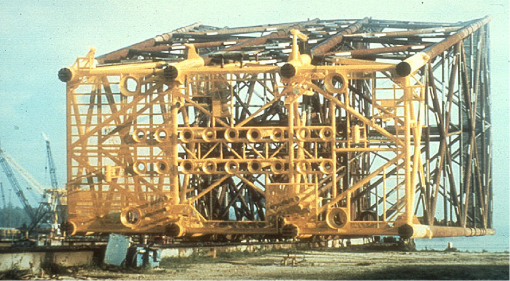 | 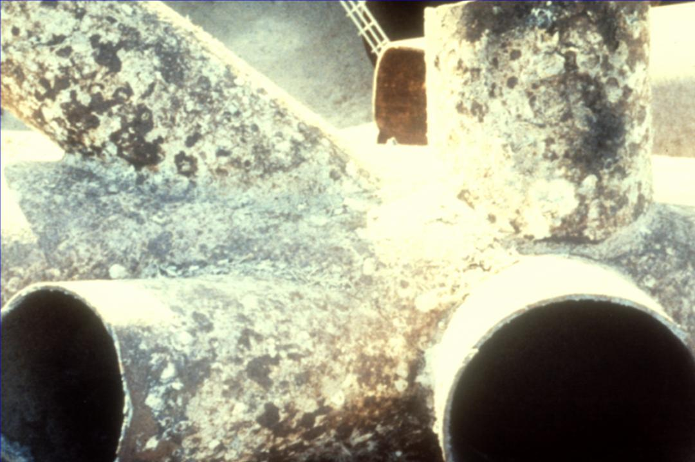 |
| Fig. 4. Offshore platform before launching. | Fig. 5. Calcareous deposits formed by cathodic protection on an offshore platform node. |
{kind=link}
{kind=link}
Types of cathodic protection
As already mentioned, there are two types of cathodic protection: galvanic- or sacrificial-anode cathodic protection and impressed-current cathodic protection (ICCP).
Galvanic (sacrificial-anode) cathodic protection
Figure 1 showed a simple galvanic cell using a buried magnesium anode to protect a buried steel pipeline. Table I shows the galvanic series of metals in soil. Carbon steel is anodic to most metals on this chart, but it is cathodic to aluminum, magnesium, and zinc - all of which are used as galvanic anodes to protect steel structures from corroding.
| Table I. Galvanic series of metals in soil |
|
Material |
Potential (volts CSE) a |
|
|
|
|
Carbon, Graphite, Coke |
+0.3 |
|
Platinum |
0 to -0.1 |
|
Mill Scale on Steel |
-0.2 |
|
High Silicon Cast Iron |
-0.2 |
|
Copper, Brass, Bronze |
-0.2 |
|
Mild Steel in Concrete |
-0.2 |
|
Lead |
-0.5 |
|
Cast Iron (Not Graphitized) |
-0.5 |
|
Mild Steel (Rusted) |
-0.2 to -0.5 |
|
Mild Steel (Clean and Shiny) |
-0.5 to -0.8 |
|
Commercially Pure Aluminum |
-0.8 |
|
Aluminum Alloy (5% Zinc) |
-1.05 |
|
Zinc |
-1.1 |
|
Magnesium Alloy (6% Al, 3% Zn, 0.15%
Mn) |
-1.6 |
|
Commercially Pure Magnesium |
-1.75 |
|
|
|
|
a Typical potential normally observed
in neutral soils and water, measured with respect to saturated copper/copper sulfate reference
electrode |
|
Figure 1 showed a simple single anode attached to a pipeline. The anode corrodes at an accelerated rate to protect the steel. These anodes are typically supplied with approximately 3-5 m (10-15 ft) of lead wire, which is sufficient to place the anodes at remote earth in most environments. Some authorities claim that modern pipeline coatings are so good that this remote earth placement is unnecessary and anodes can be placed in the same trench as the buried pipeline.
| 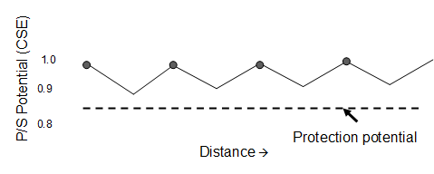 |
| Fig. 6. Potential plot along a pipeline with galvanic-anode cathodic protection. |
{kind=link}
Galvanic anodes are often installed on a distributed anode pattern. One anode protects the structure nearest to the anode-structure connection, and, where the IR drop along the pipeline is too much and inadequate protection is possible, another anode is installed. The critical location is midway between the anodes. Figure 6 shows this idea. Note that the potential varies from approximately 1 V near the anode to somewhat more than 0.85 V. Since all voltages are negative relative to saturated copper/copper sulfate reference electrode, the potentials are plotted with large negative numbers on top. This is in accordance with conventional practice for cathodic protection, but it seems awkward compared to conventional engineering and technical practice.
Table II lists the primary uses of galvanic-anode materials. At one time the great majority of on-shore structures were protected with magnesium anodes, which were usually supplied with prepackaged backfills intended to guarantee that they would corrode whenever there was sufficient moisture in the environment to cause corrosion. In recent years quality and availability problems associated with magnesium anodes supplies has led to the newer practice of supplying zinc anodes with prepackaged backfills. The use of zinc for on-shore applications, with the exception of moist, low-resistivity soils, is controversial and the practice is too new for consensus on whether or not this is an acceptable practice.
| Table II. Primary uses of galvanic anodes |
|
Magnesium |
|
|
|
On-shore
buried structures |
|
|
Process
equipment |
|
Zinc |
|
|
|
Marine
pipelines |
|
|
Process
equipment |
|
|
Freshwater
ballast tanks |
|
|
Ship hulls |
|
Aluminum |
|
|
|
Offshore
structures |
|
|
Limited use
in process equipment |
ICCP (Impressed-current cathodic protection)
ICCP is a somewhat more complicated technology than galvanic-anode cathodic protection. Figure 7 shows a typical impressed-current anode installation. The main difference between ICCP and galvanic anodes is that an external power supply is necessary to guarantee that the anode bed will be anodic to the protected structure. The anodes used in ICCP are made from materials that would normally be cathodic to carbon steel or cast iron, but the presence of the rectifier in the circuit forces the current in the desired direction. These systems also require external power connections, and this also makes the system more expensive and complicated.
Figure 8 shows a typical rectifier used for this purpose. Rectifiers like this plus their installation costs (mostly labor) amount to thousands of dollars. For this reason, ICCP is normally limited to situations where large amounts of current are needed, otherwise galvanic anodes would be cheaper. Because the costs of installing small rectifiers and large rectifiers are similar, it is common practice to connect large-capacity rectifiers to multiple anodes. Anode beds containing dozens of anodes are common.
| 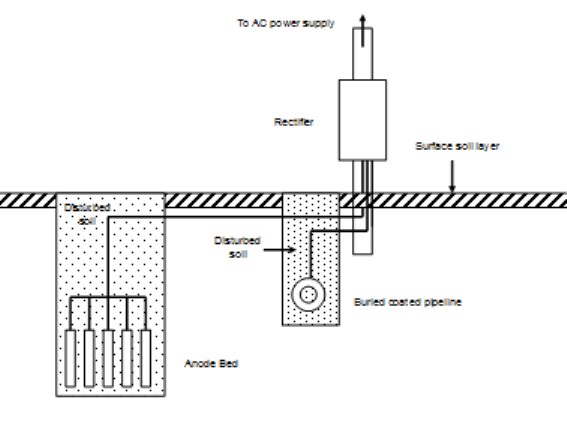 | 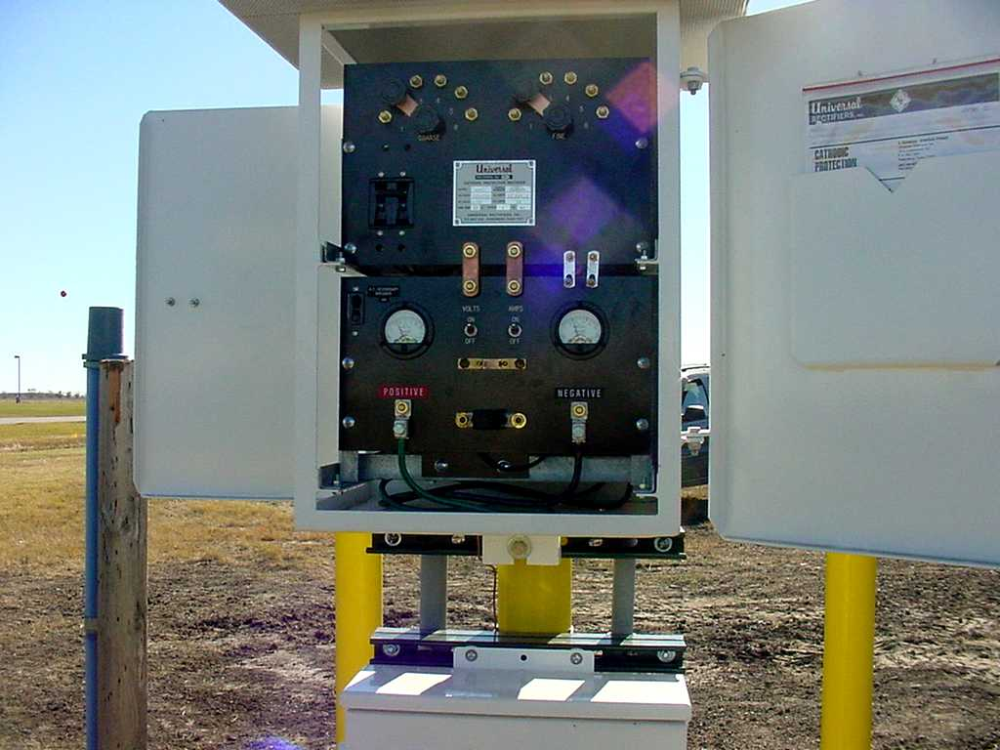 |
| Fig. 7. Impressed-current cathodic protection of a buried pipeline. | Fig. 8. A typical cathodic protection rectifier used for on-shore cathodic protection. |
{kind=link}
{kind=link}
The materials used for impressed-current cathodic protection are listed below in relative order of importance:
- High-silicon cast iron
- Graphite
- Mixed-metal oxide (MMO)
- Precious-metal clad (platinum)
- Polymer
- Scrap steel
- Lead alloy
| 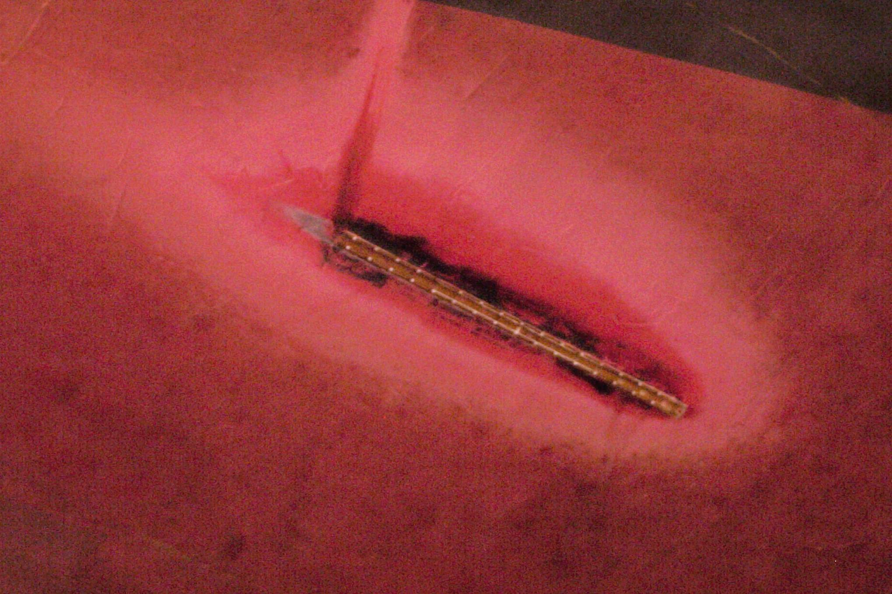 |
| Fig. 9. Bleaching of a ships coating due to the oxidation products from ICCP (Photo courtesy Ray Vickers, NACE CP instructor). |
{kind=link}
The intended oxidation reaction on impressed-current anodes is oxygen liberation, although chlorine is also evolved from many waters. This means that the lead wires and coatings near impressed-current anodes must be chemically resistant to these harsh oxidizing chemicals. Figure 9 shows the bleaching of the antifouling coating on the hull of a large ship caused by oxygen and chlorine evolution.
In locations where electric power supplies are not available, ICCP systems can be powered by thermoelectric generators solar cells, or even batteries. Windmills have also been used for this purpose.
Table III compares galvanic-anode (sacrificial) and ICCP (impressed-current) systems.
| Table III. Comparison of galvanic-anode (sacrificial) and impressed-current systems |
|
System |
|
|
Galvanic-Anode |
Impressed-Current |
|
Low initial investment for small
systems |
Cheaper for large systems |
|
Fixed voltage |
Adjustable voltage |
|
Small voltage |
Small to large voltages |
|
Fixed current |
Adjustable current |
|
Small current |
Small to very large currents |
|
Low maintenance |
Higher maintenance |
|
Stray currents unlikely |
Stray currents possible |
|
Reversed potentials impossible |
Reversed polarity possible |
|
No power source necessary |
Requires external power source |
|
Excess current unlikely |
Excess current can cause coating debonding |
Cathodic protection criteria
NACE - The Corrosion Society issued the first international standard on cathodic protection in 1969. The original version of NACE RP0169 (now SP0169) listed the following criteria for determining if cathodic protection had been achieved:
- 850 mV polarized potential against the saturated copper/copper sulfate (CSE) reference electrode
- 100 mV polarization
- 300 mV shift
- E (potential) against log i (current) relation (see Tafel equation)
- Net protective current
Other criteria proposed over the years have included the idea of exposing coupons attached to the structure and inspecting them for corrosion and determining if the net flow of electricity was onto the structure (as opposed to away from the structure).
Potential monitoring
The continued operation of cathodic protection requires monitoring to insure that the system is working properly. Third-party damage, coating degradation, stray electrical currents from nearby utilities, and changes in the environment can lead to increased current demands.
The most common means of inspecting a cathodically-protected structure is by means of a potential survey. In any potential survey it is necessary to measure the potential of the structure in question relative to a standard potential. The most commonly-used reference electrode is the saturated copper/copper sulfate electrode (CSE) (Figure 10), which is used on-shore and in freshwater applications. Silver/silver chloride electrodes are used in marine applications, and the conversion from one standard to the other is fairly simple. The -850 mV CSE standard theoretically becomes -790 mV (60 mV shift) with the silver-silver chloride electrode, but it is usually rounded to -800 mV. Zinc is sometimes used as a robust reference anode for permanently-mounted test stations on offshore structures.
| 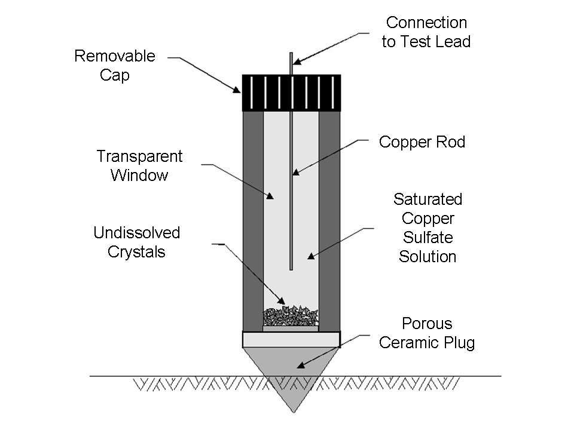 | 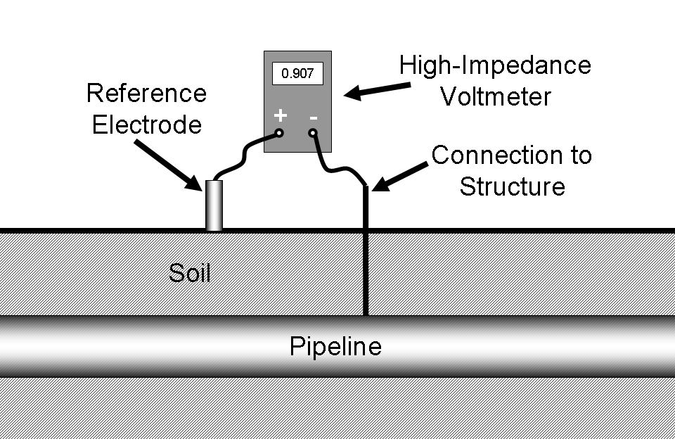 |
| Fig. 10. Saturated copper/copper sulfate electrode. | Fig. 11. Measurement of pipe-to-soil potential. |
{kind=link}
{kind=link}
In order to measure the potential of a structure it must be connected through a high-impedance voltmeter to a reference cell in direct electrical contact with the same electrolyte. This is shown in Figure 11.
Note that, if the voltmeter is attached as shown above, the structure potential will normally read positive. Many organizations prefer to standardize on a procedure where the reference electrode is always attached to the negative terminal. By doing this, the digital voltmeter will automatically display a negative number for most readings. In the rare circumstances where a positive potential is detected, this is an indication of stray-current interference from some source external to the system under inspection. Either way is acceptable, but the inspector should always follow company protocol so that misunderstandings about potential readings are minimized.
| 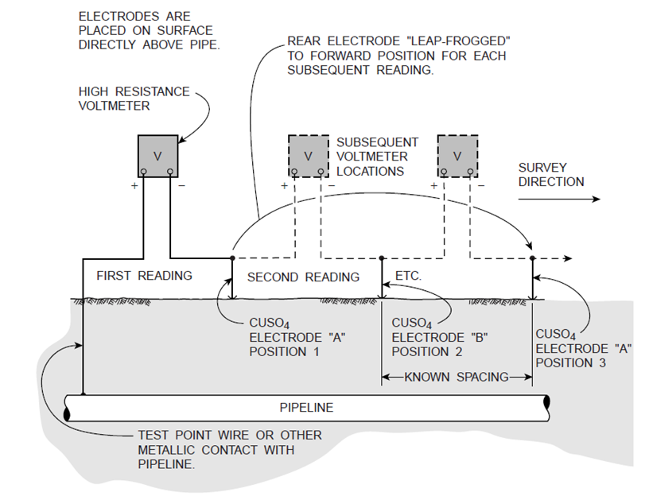 |
| Fig. 12. Typical at-grade test station. |
{kind=link}
Test stations of this type are available from most cathodic protection equipment suppliers. Above-ground designs are also available. The at-grade design has the advantage of being less likely to suffer vandalism or other third-party damage. The minimum spacing for test stations is at the midpoint between anode locations, the most likely location for the pipeline potential to be unprotected.
Pipelines run for long distances, and the most common surveys are over-the-line close-interval potential surveys (CIPS) where the surveyors follow the right of way and make measurements at predetermined intervals. The intervals between readings can vary, but are typically in the hundreds of meters (yards) for many cross-country pipelines. These surveys supplement the information obtained from readings at the test points, which usually are spaced much farther apart.
Additional topics
Instant off potential
The idea of a -850 mV polarized potential came from the work and publications of R. Kuhn and coworkers (1933) along the Louisiana Gulf coast. This criterion had been demonstrated to work in these swampy soils for several decades. In 1967 A. W. Peabody published his classic book on pipeline corrosion control, from which Table 2-2 is condensed in Table IV.
| Table IV. Practical galvanic series |
|
|
Metal |
Volts |
|
|
(CSE) |
|
|
Noble or cathodic |
Copper, brass, bronze |
-0.2 |
|
|
|
|
|
|
Mill scale on steel |
-0.2 |
|
|
Mild steel (rusted) |
-0.2 to -0.5 |
|
|
Mild steel (clean and shiny) |
-0.2 to -0.8 |
|
|
|
|
|
Active or anodic |
Zinc |
-1.1 |
|
Magnesium |
-1.75 |
The above table shows that, at -850 mV, the potential of carbon steel is at least 50 mV and usually several hundred mV shifted from the unprotected potential. It has been estimated that a 70-100 mV shift in potential will lower the corrosion rate by one order of magnitude to 10% of the original rate. The ease of using the -850 mV criterion and the long-term leak records justifying its use led to this becoming the most commonly-accepted cathodic-protection criterion. Note that -850 mV is often several hundred mV shifted from the native potential, and it could be argued (as many have) that using the -850 mV criterion wastes electricity.
| 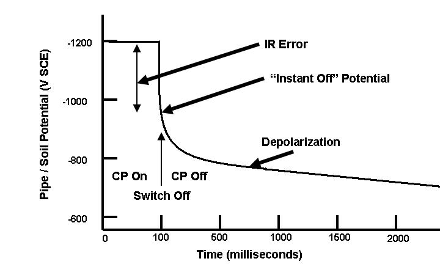 |
| Fig. 13. Idealized instant-off potential plot. |
{kind=link}
The instant off potential has been the most controversial aspect of cathodic protection in recent years. There are many publications pro and con on this subject, and the ideas behind instant off potentials are the subject of continuing debate.
Some of the first advocates of instant off potentials cited the need for accounting for IR drops between the structure and the electrolyte. This was based on the mistaken assumption that the -850 mV CSE was the equilibrium potential for carbon steel in soil.
This is not the case because:
- The -850 mV criterion came from leak records and measurements of current on potentials on cathodically protected pipelines, primarily in the Gulf Coast of the United States. The standard was considered acceptable for most situations, although a -950 mV criterion was recommended when microbial activity was likely.
- The -805 mV criterion is at a lower (smaller negative number) than the equilibrium potential.
Advocates of the more conservative instant off potential have pointed out that, while unrecognized IR drops may have been negligible in the wet, swampy low-resistivity soils along the Gulf Coast, these IR drops can be much larger in other locations. This controversy continues.
Debonded coatings
Coating debonding can be caused by excessive cathodic protection or by inadequate coating-to-metal adhesion, which is usually due to poor surface preparation prior to the coating process. It can also be due to natural ageing of the coating.
Excessive cathodic protection can cause coating blistering (Figure 14). Some organizations try to avoid blistering by limiting the negative potentials allowed for cathodic protection, but the current density at the metal surface is more important.
Coating debonding due to poor surface preparation is shown in Figure 15, where a fusion-bonded epoxy coating has lifted from the surface. The metal underneath the debonded coating is discolored, but no significant corrosion has occurred. The whitish deposits underneath this disbonded coating show that cathodic protection has reached the metal surface, increased the pH of the moisture at the metal/environment interface, and caused these mineral deposits.
| 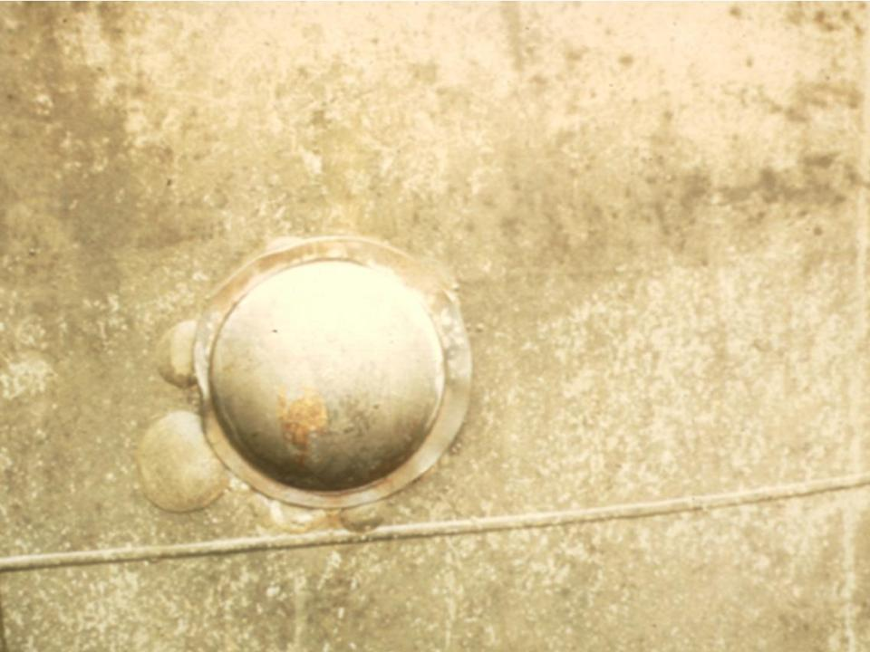 | 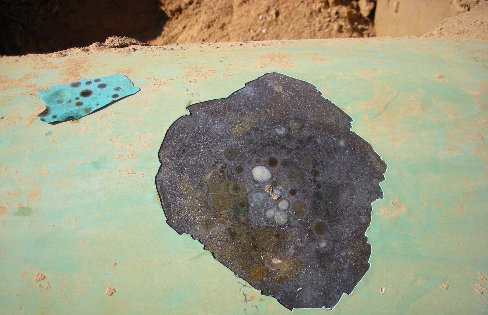 |
| Fig. 14. Coating debonding caused by excessive current from a flush-mounted anode (center of the picture). The dielectric shield surrounds the anode and the coating blisters are outside the dielectric shield gasket. | Fig. 15. Whitish deposits underneath debonded fusion-bonded epoxy coating (Photo courtesy R. Norsworthy, NACE CP instructor). |
{kind=link}
{kind=link}
Anodic protection
| 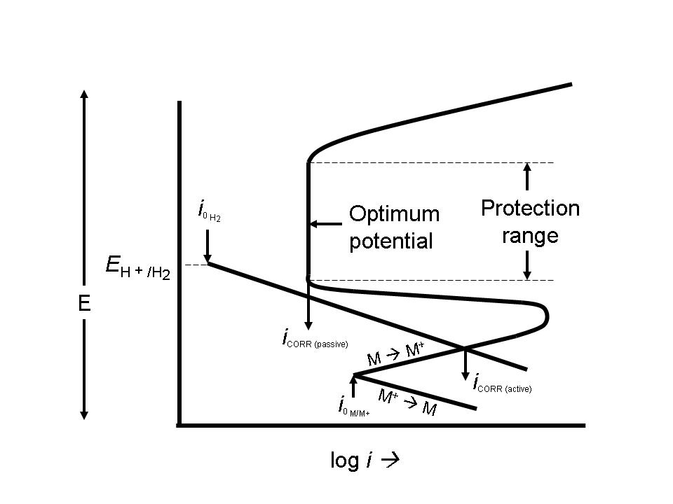 |
| Fig. 16. Schematic diagram showing the protection range and optimal potential for anodically protecting an active-passive metal. |
{kind=link}
AP is used to protect metals that exhibit passivation in environments where the current density in the freely corroding state is significantly higher than the current density in the passive state over a wide range of potentials. This is shown in Figure 16.
Anodic protection is used for carbon steel storage tanks where cathodic protection is not suitable due to very high current requirements. Examples include extreme pH environments such as concentrated sulfuric acid and 50 percent caustic soda. It is also used on a variety of stainless steels, titanium, and similar alloys in very acidic environments. The mining and the pulp and paper industries use these systems.
Related articles
AnodizingCorrosion inhibition
Electrochemistry of corrosion
Bibliography
- Metallurgy and Corrosion Control in Oil and Gas Production, R. Heidersbach, Wiley, Hoboken NJ, 2011.
- Examining the Controversy Surrounding the -850 mV CP Criteria, R. Gummow, Pipeline and Gas Journal pp. 85-87, November 2010.
- How Instant is Instant?, B. Cherry, Journal of Computer Science and Engineering Vol. 9, No. 6, 2006.
- Peabodys Control of Pipeline Corrosion (2nd edition), R. Bianchetti (editor), NACE, Houston TX, 2001.
- Anodic Protection: Theory and Practice in the Prevention of Corrosion, O. L. Riggs and C. E. Locke, Plenum Press, New York, 1981.
- Control of Pipeline Corrosion, A. W. Peabody, NACE, Houston TX, 1967.
- Cathodic Protection of Underground Pipelines from Soil Corrosion, R. J. Kuhn, API Products Bulletin 321, 1933.
- Cathodic Protection of Underground Pipelines against Soil Corrosion, R. J. Kuhn, Proceedings of the American Petroleum Institute, Vol. 14, pp 153-157.
- On the Corrosion of Copper Sheeting by Sea Water, and on Methods of Preventing This Effect; And on Their Application to Ships of War and Other Ships, H. Davy, Philosophical Transactions of the Royal Society of London Vol. 114, pp 151-158, 1824. Available on the WWW.
Other Resources
Listings of electrochemistry books, review chapters, proceedings volumes, and full text of some historical publications are also available in the Electrochemistry Science and Technology Information Resource (ESTIR). (http://knowledge.electrochem.org/estir/)